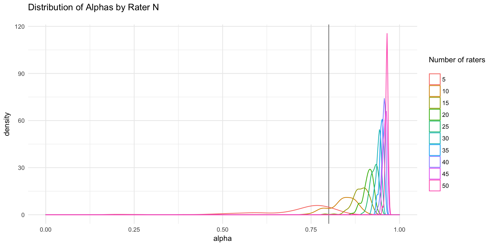
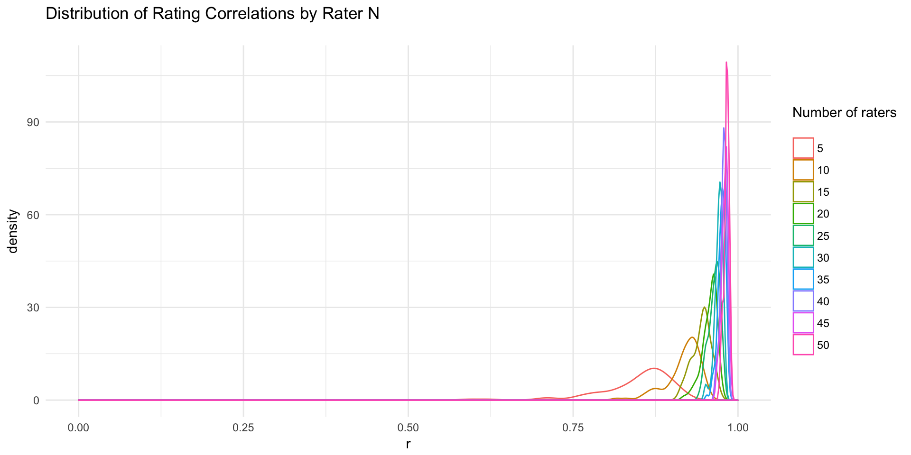

Download the Rmd notebook for this example
I’ve often wondered how many raters I need to sample to get reliable stimulus ratings.
This will obviously depend on the stimuli and what they’re being rated for. If there is a lot of inter-rater variation or very little inter-stimulus variation, you will need more raters to generate mean ratings with any reliability.
If you have a large set of ratings of a type of stimulus, population of rater, and type of rating you’re interested in, you can use the script below to figure out how many raters you need to sample to get mean stimulus ratings that are well-correlated with mean ratings from very large samples.
The example below is for attractiveness ratings using an open-access image set from my lab.
library(tidyverse)
library(psych)Read data from DeBruine, Lisa; Jones, Benedict (2017): Face Research Lab London Set. figshare. doi: 10.6084/m9.figshare.5047666
data <- read_csv("https://ndownloader.figshare.com/files/8542045")Calculate canonical mean ratings (average of all available ratings)
canon <- data %>%
select(X001:X173) %>%
group_by() %>%
summarise_all(mean) %>%
t()Below is a function to sample n raters from the set and calculate Cronbach’s alpha and r from the Pearson’s correlation with the canonical ratings.
get_alpha <- function(data, n) {
# sample your full dataset
data_sample <- data %>%
sample_n(n) %>%
select(X001:X173) # select only columns with your stimuli
# calculate cronbach's alpha
capture.output(suppressWarnings(a <- alpha(t(data_sample))))
alpha <- a$total["std.alpha"] %>% pluck(1)
# calculate mean sample ratings
sample_means <- data_sample %>%
group_by() %>%
summarise_all(mean) %>%
t()
# calculate correlation between sample mean ratings and canon
r <- cor(sample_means, canon)[[1,1]]
# return relevant data
tibble(
n = n,
alpha = alpha,
r = r
)
}Generate 100 samples for 5 to 50 raters.
n_samples <- 100
n_raters <- seq(5, 50, by = 5)
sim <- rep(n_raters, each = n_samples) %>%
purrr::map_df( function(n) {
get_alpha(data, n)
})This graph of the distribution of Cronbach’s alphas shows that alphas tend to be fairly “high” (>.8) after about 15 raters for this stimulus set and rating.

Here is a graph of the distribution of correlations between sample means and canonical mean ratings. Again, the sample mean ratings are very highly correlated with the canonical ratings from the full set of 2513 raters after about 15 raters.

This table gives the median and 10th percentiles for alpha and r, as well as the proportion of alphas over 0.8 (typically considered high).
| n | median alpha | 90% alpha > | alpha >= 0.8 | median r | 90% r > |
|---|---|---|---|---|---|
| 5 | 0.75 | 0.54 | 0.16 | 0.86 | 0.78 |
| 10 | 0.84 | 0.78 | 0.83 | 0.92 | 0.88 |
| 15 | 0.89 | 0.86 | 0.99 | 0.95 | 0.93 |
| 20 | 0.91 | 0.89 | 1.00 | 0.96 | 0.94 |
| 25 | 0.93 | 0.91 | 1.00 | 0.97 | 0.95 |
| 30 | 0.94 | 0.93 | 1.00 | 0.97 | 0.96 |
| 35 | 0.95 | 0.94 | 1.00 | 0.98 | 0.97 |
| 40 | 0.96 | 0.95 | 1.00 | 0.98 | 0.97 |
| 45 | 0.96 | 0.95 | 1.00 | 0.98 | 0.97 |
| 50 | 0.96 | 0.96 | 1.00 | 0.98 | 0.98 |